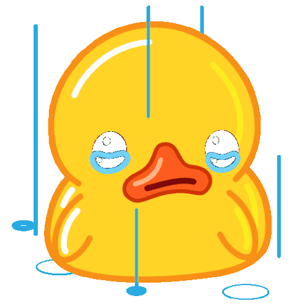

ПРОЕКТ ЗАКРЫТ
Данный проект больше не доступен. Спасибо вам за то, что слушали нас и поддерживали, мы вас любим.
Это радио было придумано просто по приколу, никому не было интересно, разработчикам стало не интересно
Поэтому мы приняли решение закрыть этот проект.
По всем вопросам обращайтесь в Telegram: @apathiaaaa